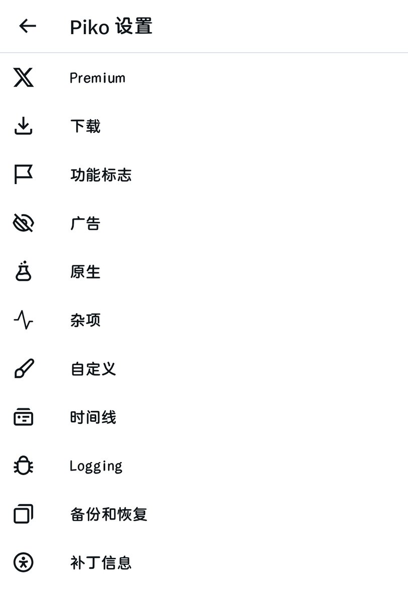

時璃風医詩🍥🌈
@hagishigure
@LumiCatRoll @NeoFreeBird 我一直沒明白piko設置是什麼東西。

猫卷
@LumiCatRoll
刷推不想看广告的话，给大家推荐两个第三方的客户端
iOS的话可以用 @NeoFreeBird 最简单的方式是买证书自签sign完就可以sideload他们的IPA了
这个是直接把X给rebrand回twitter了
还有可以解锁的local (non server sided) premium功能比如nav bar和主题等等，以及隐藏很多没用的东西 https://t.co/J2xDNJgHbZ